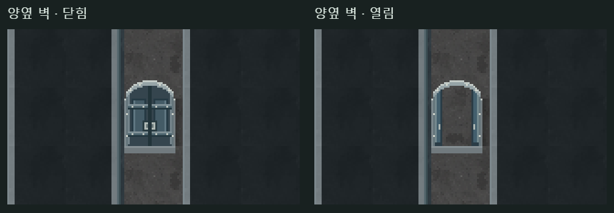

<!doctype html><html lang="ko"><meta charset="utf-8"><meta name="viewport" content="width=device-width,initial-scale=1"><title>151번 문 · 양옆에 벽이 있을 때</title><style>body{background:#17201f;color:#dfe9df;font:16px/1.6 system-ui;margin:0}main{max-width:1100px;margin:auto;padding:20px}h1{font-size:25px}a{color:#a3d5c5}img{width:100%;height:auto;image-rendering:pixelated}</style><main><h1>양옆에 벽이 이어질 때 · 가로벽 문</h1><p>151번 문 모양 그대로입니다. 왼쪽은 닫힘, 오른쪽은 열림이며 위아래로 통행합니다.</p><p><a href="./?seed=F1-mw8yvehm&door=horizontal">실제 랜덤 지도에서 이동하기</a> · <a href="door-review.html">위아래 벽에서 본 모습</a></p></main></html>
